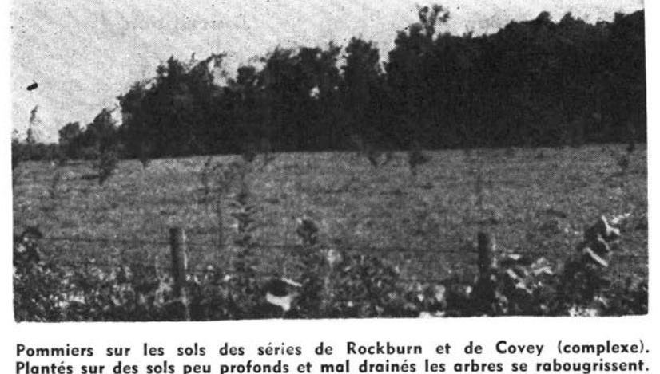

Identification & Caractéristiques Générales
La série Rockburn s'est développée sur un till morainique à matrice de limon sablo-caillouteux, dérivé principalement de la désintégration du grès de Potsdam d'âge cambrien. Ce matériau parental se caractérise par une forte proportion de sable quartzeux anguleux et une abondance de blocs et de fragments rocheux de dimensions variables, répartis tant en surface qu'en profondeur. Sur le plan géomorphologique, ces dépôts occupent préférentiellement des dépressions, des cuvettes à surface mollement ondulée, les bas-fonds humides, ainsi que les pentes faibles et les replis de terrasses associés au plateau de Covey. Le profil pédologique présente une compacité importante, particulièrement dans les horizons inférieurs fortement entassés, et peut être le siège d'un écoulement hydrique subsuperficiel oblique en piémont.
La dynamique hydropédologique est caractérisée par un mauvais drainage naturel et une perméabilité restreinte par la compacité du substratum non calcaire. La nappe phréatique est temporairement ou durablement perchée à faible profondeur, ce qui favorise l'accumulation d'une couche superficielle organique et humifère menant à un caractère semi-tourbeux. Les analyses indiquent une réactivité fortement influencée par la nature siliceuse du matériel originel, bien que la couche de surface humifère conserve des réserves basiques modérées. L'engorgement hydrique récurrent, combiné à une pierrosité élevée et à la présence de venues d'eau au pied des pentes, restreint fortement la battance et l'accessibilité du sol.
Les aptitudes agronomiques de la série Rockburn sont extrêmement limitées en raison des contraintes physiques et hydriques majeures. Une proportion importante de ces superficies demeure sous couvert forestier, composé d'essences hygrophiles et silicoles telles que l'orme, le frêne, la pruche et le mélèze. Les secteurs défrichés sont généralement impropres aux grandes cultures ou au maraîchage et sont le plus souvent confinés à l'utilisation pastorale. L'mise en valeur agricole de ces sols se heurte à des obstacles quasi insurmontables, incluant la forte pierrosité, la compacité du sous-sol et la difficulté d'installer un réseau de drainage souterrain efficace dans ces cuvettes et zones de résurgence.
Classification Taxonomique & Environnement Pédologique
| Ordre Pédologique | Gleysolique |
|---|---|
| Grand Groupe (SCSS) | Gleysol humique |
| Sous-Groupe Taxonomique | Gleysol humique orthique |
| Famille Pédologique | Sableuse, mixte sableux, neutre |
| Mode de Dépôt Parental | Morainique |
| Classe de Drainage Naturel | Mal drainé |
| Régime Thermique & Humidité | Doux / Perhumide |
Description Morphologique du Profil Type
Séquence génétique des horizons pédologiques caractérisant le profil type représentatif de la série Rockburn :
Profil représentatif — Comté de Huntingdon
✓ Source : Comté de Huntingdon — Page 194Couleur Munsell : Non précisée
Structure & Consistance : Polyédrique à granulaire
Description morphologique : Litière de feuilles mortes et débris végétaux en décomposition.
Couleur Munsell : Non précisée
Structure & Consistance : Polyédrique à granulaire
Description morphologique : Limon sablo-caillouteux, noir brunâtre à noir intense, grumeleux et friable. pH: 5.5 — 6.2.
Couleur Munsell : Non précisée
Structure & Consistance : Polyédrique à granulaire
Description morphologique : Limon sablo-caillouteux, jaune grisâtre à jaune pâle avec traînées de rouille et bariolé de taches ou de rayures claires. Fortement tassé. pH: 5.9 — 6.5.
Couleur Munsell : Non précisée
Structure & Consistance : Polyédrique à granulaire
Description morphologique : Limon sableux très caillouteux, quartzeux, till très fortement tassé et très compact (hardpan), pâle, avec d'abondantes taches de rouille. Se maintient humide et sourceux. Le plan d'eau s'établit entre 18" et 24", profondeur à laquelle pénètre les racines. pH: 6.5 — 7.5.
Profils Photographiques & Planches de Terrain
Documents iconographiques, figures pédologiques et coupes de terrain documentées dans les mémoires d'inventaire pour de la série Rockburn :

Propriétés Physico-Chimiques & Analyses de Laboratoire
| Horizon | Prof. (pces) | pH | C org. % | N % | C/N | Sable grossier % | Sable fin % | Sable tot. % | Limon % | Argile % | Ca éch. | Mg éch. | K éch. | Na éch. | Bases tot. | C.E.C. | Saturation % |
|---|---|---|---|---|---|---|---|---|---|---|---|---|---|---|---|---|---|
| Couche de surface | N | 1 | 1 | 1 | 1 | 1 | 1 | 1 | 1 | 1 | 1 | 1 | 1 | 1 | 1 | 1 | L |
| Moyenne | 3,7 | 7,8 | 12,7 | 10,9 | 37,7 | 43,4 | 18,9 | 5,7 | 3,98 | 11,2 | 2,38 | 0,85 | 0,08 | 27,96 | 22,7 | ||
| Inférieure | - | - | - | - | - | - | - | - | - | - | - | - | - | - | - | ||
| Supérieure | - | - | - | - | - | - | - | - | - | - | - | - | - | - | - | ||
| CV | - | - | - | - | - | - | - | - | - | - | - | - | - | - | - | ||
| Sous-sol | N | 1 | 1 | 1 | 1 | 1 | 1 | 1 | 1 | 1 | 1 | 1 | 1 | 1 | 1 | 1 | |
| Moyenne | 4,0 | 7,3 | 14,8 | 14,0 | 42,9 | 44,8 | 12,3 | 7,1 | 0,33 | 7,6 | 2,69 | 0,06 | 0,03 | 15,25 | 142,3 | ||
| Inférieure | - | - | - | - | - | - | - | - | - | - | - | - | - | - | - | ||
| Supérieure | - | - | - | - | - | - | - | - | - | - | - | - | - | - | - | ||
| CV | - | - | - | - | - | - | - | - | - | - | - | - | - | - | - | ||
| Substratum | N | 1 | 1 | 1 | 1 | 1 | 1 | 1 | 1 | 1 | 1 | 1 | 1 | 1 | 1 | 1 | |
| Moyenne | 4,4 | 5,6 | 10,6 | 13,0 | 37,8 | 54,0 | 8,2 | 8,0 | 0,19 | 15,7 | 1,51 | 0,04 | 0,04 | 9,88 | 66,7 | ||
| Inférieure | - | - | - | - | - | - | - | - | - | - | - | - | - | - | - | ||
| Supérieure | - | - | - | - | - | - | - | - | - | - | - | - | - | - | - | ||
| CV | - | - | - | - | - | - | - | - | - | - | - | - | - | - | - |
Particularités Régionales, Phases & Variantes Pédologiques
Déclinaisons régionales, faciès texturaux, phases d'érosion ou de pierrosité et variantes cartographiées par étude pour de la série Rockburn :
| Étude Régionale | Symbole | Appellation / Phase / Variante | Différenciation avec la série type (Analyse pédologique) |
|---|---|---|---|
| Comté de Huntingdon | Rk |
Rockburn loam sableux caillouteux | Modalité modale de référence (type de base de la série). |
| Comté de Napierville | RKbp |
Rockburn loam sableux caillouteux | Conforme à la série type de référence (caractéristiques texturales et drainage identiques). |
Distribution Pédo-Paysagère & Représentativité Cartographique (Couverture PPS 2026)
- Perrot loam sableux (PRO) — co-occurrente dans 21 polygone(s)
- Botreaux sable limoneux à loam sableux (BUX) — co-occurrente dans 11 polygone(s)
- Covey loam sableux caillouteux (CVY) — co-occurrente dans 8 polygone(s)
Aptitudes Agronomiques, Hydropédologie & Conservation des Sols
Indicateurs Hydropédologiques & Vulnérabilité à l'Érosion (BDHP 2026)
Interprétation BDHP : Potentiel de ruissellement très élevé. Taux d'infiltration très lent, sols très argileux, couches compactes ou nappe temporairement affleurante.
Classement selon l'Inventaire des Terres du Canada (ITC / CLI) : Classe 3w.
- Potentiel agricole : Terroir adapté aux cultures régionales selon la texture dominante et la régie de drainage.
- Contraintes majeures : Mal drainé. Risque d'engorgement temporaire ou d'excès d'eau printanier.
- Gestion & Aménagement : Drainage souterrain ou superficiel préconisé sur les terres planes. Chaulage et apport organique régulier selon les bilans agronomiques.
- Cultures adaptées : Grandes cultures (maïs, soya, céréales), prairies fourragères et cultures maraîchères selon le contexte géomorphologique.